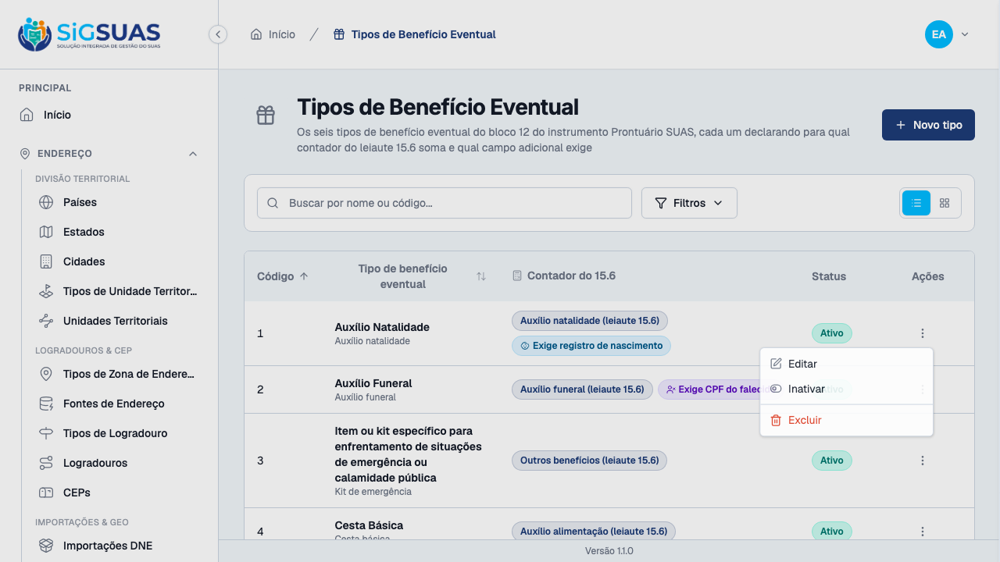
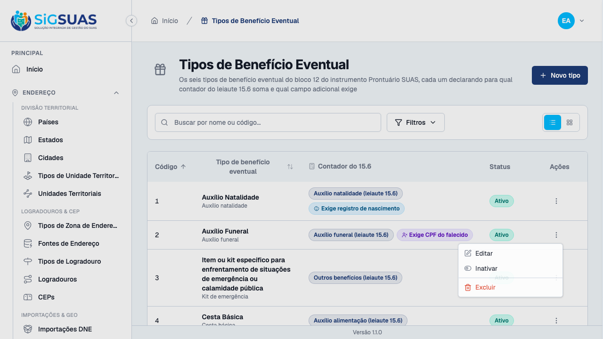
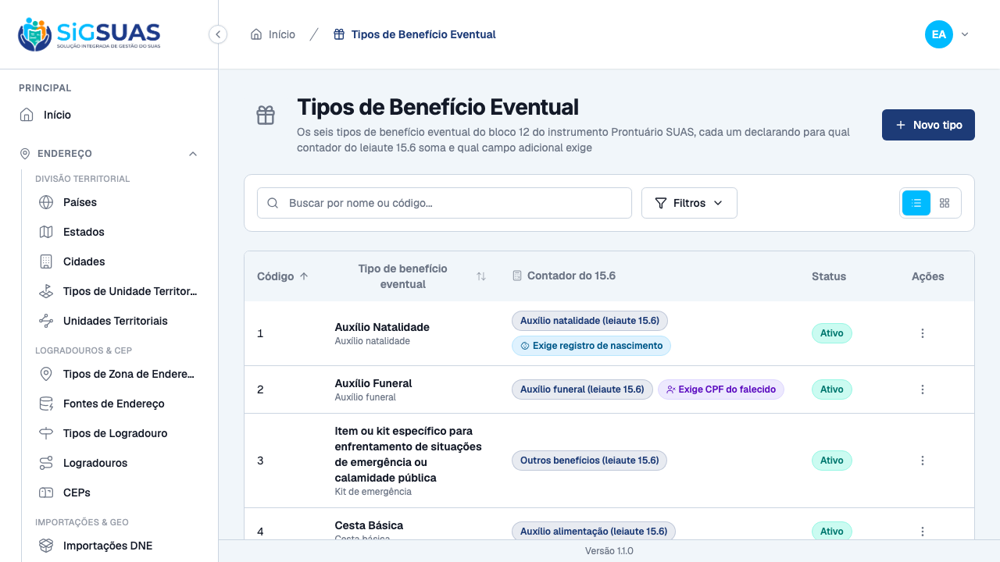
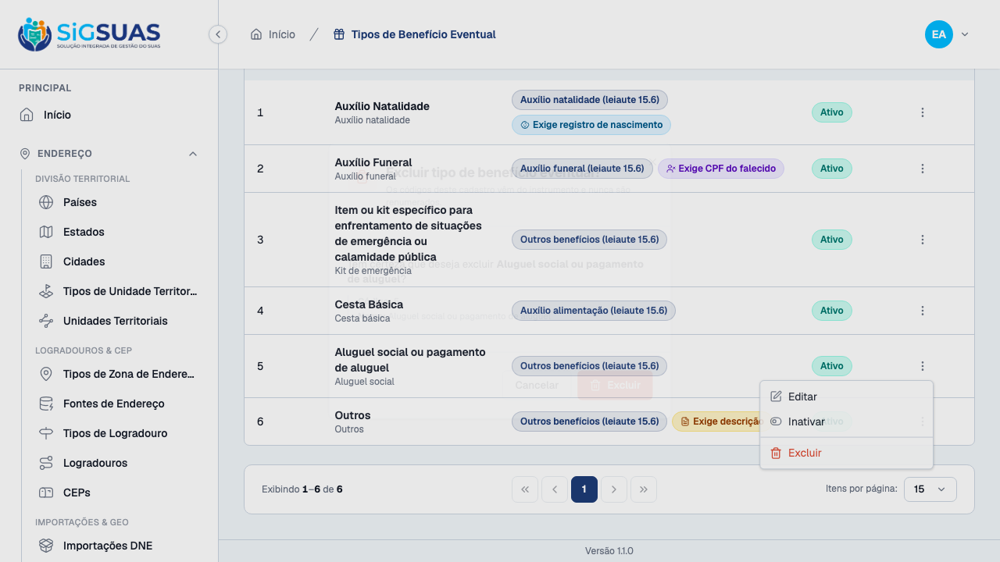

Relatório de Critérios de Aceite — US-BENEF-01
Resumo
Onze critérios de aceite (CA01–CA10, com o CA06b do tipo "Outros"). Seis evidenciados no navegador (CA01, CA02, CA04, CA05 e CA06/CA06b — cinco prints, um deles reaproveitado para dois critérios) e cinco cobertos pela suíte automatizada (CA03, CA07, CA09, CA10, e a recusa REAL de exclusão do CA08). A suíte fecha com 34 testes e 150 asserções, entre invariantes de Model e testes de Feature do Painel Global. Os 7 cenários Playwright passam contra base recém-semeada, sem tocar a massa usada pelos demais specs da fase. Nenhum critério em falha. O CA08 é o único critério atendido de forma parcial pela UI — ver Observações e ressalvas.
| CA | Critério | Situação | Evidência |
|---|---|---|---|
| CA01 | Seis tipos disponíveis | ATENDIDO | Print + Pest |
| CA02 | Regra de apuração visível em cada tipo | ATENDIDO | Print + Pest |
| CA03 | Nenhum tipo sem contador | ATENDIDO (SUITE) | Pest |
| CA04 | Campo adicional exigido no natalidade | ATENDIDO | Print + Pest |
| CA05 | Campo adicional exigido no funeral | ATENDIDO | Print + Pest |
| CA06 | Demais tipos sem campo adicional | ATENDIDO | Print + Pest |
| CA06b | O tipo "Outros" exige a observação | ATENDIDO | Print + Pest |
| CA07 | Município não edita a lista | ATENDIDO (SUITE) | Pest |
| CA08 | Item em uso não é excluído | ATENDIDO (PARCIAL UI + SUITE) | Print (afordância) + Pest (422 real) |
| CA09 | Item inativado continua contando no histórico | ATENDIDO (SUITE) | Pest |
| CA10 | Alteração da regra de apuração auditada | ATENDIDO (SUITE) | Pest |
CA01 — Seis tipos disponíveis ATENDIDO
Dado que sou Administrador no Painel de Administração Global, quando eu consultar o cadastro de tipos de benefício eventual, então vejo os seis tipos do instrumento, com os códigos 1 a 6, e nenhum código foi renumerado.
- A listagem mostra exatamente seis linhas, uma para cada código do bloco 12 — nem mais, nem menos.
- Verificado que nenhum código fora de
1..6existe na tela (a suíte testou explicitamente a ausência de0,7,8,9,10).

CA02 — Regra de apuração visível em cada tipo ATENDIDO
Quando eu abrir cada tipo, então o auxílio natalidade consta com remittance_counter = birth_assistance, o auxílio funeral com funeral_assistance, a cesta básica com food_assistance, e kit de emergência, aluguel social e outros com other_benefits.
- A tela confere, item a item, os seis contadores — não uma amostra. Trocar o contador de um único tipo no cadastro global muda números declarados ao TCE-AL de todos os municípios, por isso o spec não amostra.
- Contagem por rótulo: "Auxílio natalidade" e "Auxílio funeral" aparecem uma vez cada; "Auxílio alimentação" (a inferência do código 4, D10) aparece uma vez; "Outros benefícios" aparece três vezes (códigos 3, 5 e 6).
CA03 — Nenhum tipo sem contador ATENDIDO (SUITE)
Quando eu percorrer os seis tipos, então todos têm remittance_counter preenchido, e a coluna é NOT NULL no banco — item sem contador não pode existir.
- O teste de invariante prova que
remittance_counternunca é nulo nos seis registros semeados, e o teste de Feature prova que o banco recusa a tentativa de gravar a coluna vazia.
Sem prova visual: critério verificado pela suíte automatizada (ver anexo).
CA04 — Campo adicional exigido no natalidade ATENDIDO
Quando eu abrir o tipo "Auxílio Natalidade", então ele consta com requires_birth_registration = true, e é o ÚNICO item com esse atributo.
- Na listagem, só a linha do código 1 traz o selo "Exige registro de nascimento" — verificado que o selo é exclusivo na tela inteira, não "o mais comum".
- No detalhe (edição) do tipo, o toggle de registro de nascimento aparece ligado e o de CPF do falecido desligado — a mesma exclusividade mútua imposta no backend (RN03).

CA05 — Campo adicional exigido no funeral ATENDIDO
Quando eu abrir o tipo "Auxílio Funeral", então ele consta com requires_deceased_cpf = true, e é o ÚNICO item com esse atributo.
- Só a linha do código 2 traz o selo "Exige CPF do falecido" — exclusivo na tela inteira.
- No detalhe do tipo, o toggle de CPF do falecido aparece ligado e o de registro de nascimento desligado.

CA06 — Demais tipos sem campo adicional ATENDIDO
Quando eu abrir cesta básica, kit de emergência, aluguel social e outros, então nenhum deles exige registro de nascimento nem CPF de pessoa falecida.
- Verificado que os códigos 3, 4 e 5 não carregam badge condicional nenhuma — nem registro de nascimento, nem CPF do falecido, nem descrição.

CA06b — O tipo "Outros" exige a observação ATENDIDO
Quando eu abrir o tipo "Outros" (código 6), então ele consta com requires_description = true, e é o único item com esse atributo.
- Só a linha do código 6 traz o selo "Exige descrição" — exclusivo na tela inteira, decisão do humano em 15/09/2026 (D05).
CA07 — Município não edita a lista ATENDIDO (SUITE)
Dado que sou Master no Painel do Tenant, quando eu procurar rota de escrita para tipos de benefício eventual, então ela não existe (404) — só há leitura.
- A suíte prova que toda rota de escrita rejeita token do guard
client, e que a leitura compartilhada continua disponível para o mesmo guard — a ausência da rota de escrita sobclient.phpé a regra (D09).
Sem prova visual: critério verificado pela suíte automatizada (ver anexo).
CA08 — Item em uso não é excluído ATENDIDO (PARCIAL UI + SUITE)
Dado que o tipo "Cesta Básica" já foi usado em concessões, quando eu tentar excluí-lo, então recebo 422 com error_code = eventual_benefit_type_in_use, e a mensagem orienta a inativar.
- Pela tela, este spec prova apenas o caminho seguro: a afordância de exclusão existe (o verbo não é escondido, RN05) e o diálogo de confirmação abre com o código e o nome corretos, sem confirmar a exclusão. O
DELETEreal não foi disparado no navegador. - A recusa REAL de exclusão de tipo em uso (422
eventual_benefit_type_in_use+ orientação de inativar) é verificada de ponta a ponta emapi/tests/Feature/Api/Manager/EventualBenefitTypeTest.php.

CA09 — Item inativado continua contando no histórico ATENDIDO (SUITE)
Dado que inativei um tipo já usado, quando eu consultar a apuração do período em que ele foi usado, então as concessões registradas com ele continuam contando, e nenhuma query de apuração filtra is_active.
- Verificado que a listagem mantém o item inativado visível sem filtro de
is_active— a mesma regra que a US-BENEF-03 usa na apuração.
Sem prova visual: critério verificado pela suíte automatizada (ver anexo).
CA10 — Alteração da regra de apuração auditada ATENDIDO (SUITE)
Dado que alterei o remittance_counter de um tipo, quando eu consultar activity_log, então a alteração consta, com autor, data e o valor anterior.
- O teste audita a mudança de
remittance_countere confirma que o valor ANTERIOR fica registrado — é a evidência que permite ao TCE-AL rastrear quando um número já declarado mudou de origem.
Sem prova visual: critério verificado pela suíte automatizada (ver anexo).
Observações e ressalvas
⚠️ CA08 pela UI: a recusa real de exclusão não foi exercitada na tela
O E2ESeeder não semeia nenhuma concessão em family_eventual_benefits — ou seja, hoje, para QUALQUER um dos seis tipos, a trava de uso responderia "não está em uso" e um DELETE de verdade teria sucesso (204), apagando um dos seis tipos usados pelos outros casos desta mesma suíte. Forçar a exclusão para "provar" o 422 seria o caminho inverso: sem uso real, ela não recusaria — apagaria massa. O spec do teste prova, honestamente, apenas o caminho sem risco: a afordância existe e o diálogo abre com os dados corretos, sem confirmar. O caminho real — 422 eventual_benefit_type_in_use e a orientação de inativar — está coberto de ponta a ponta por EventualBenefitTypeTest no backend.
Correção durante a fase: o CA08 nasceu parcial
A trava de uso deste critério só ficou completa quando a tabela de concessões (US-BENEF-02) passou a existir de verdade na branch — antes disso, o guard de uso não tinha o que consultar. O CA08 foi fechado por completo no commit fd1768a, depois que family_eventual_benefits entrou.
Defeito corrigido: o seeder dos tipos não estava no ambiente de aceite
O EventualBenefitTypeSeeder não estava registrado no E2ESeeder — o ambiente de aceite subia sem nenhum dos seis tipos, o que teria derrubado toda a suíte deste dossiê. Corrigido no commit 1ec4a12.
Anexo I — Cobertura automatizada (Pest 4, filtro EventualBenefitType)
PASS Tests\Unit\Models\EventualBenefitTypeTest ✓ it has correct fillable, casts and defaults 0.38s ✓ it uses soft deletes, HasUuid, LogsActivity and resolves by uuid 0.03s ✓ it is a GLOBAL lookup — never tenant-scoped (D01/RN04) 0.01s ✓ it has no global scope of is_active — history/apuration never filte… 0.01s ✓ it enforces unique code — even against soft-deleted rows (D06/RN01) 0.01s ✓ it configures the activity log with ALL the audited fields, includi… 0.01s ✓ it invariant 1 — remittance_counter is never null across the six se… 0.01s ✓ it invariant 2 — the Store Form Request rejects both conditionals t… 0.01s ✓ it invariant 2 — a single conditional true passes the Store Form Re… 0.01s ✓ it invariant 2 — no seeded row ever has both conditionals true (D04… 0.01s ✓ it invariant 3 — exactly one seeded type requires birth registratio… 0.01s ✓ it invariant 4 — all four SiapBenefitCounter cases are reachable by… 0.01s PASS Tests\Feature\Api\Manager\EventualBenefitTypeTest ✓ it lists the six types with codes 1..6, never renumbered (CA01) 0.05s ✓ it matches each of the six types to the expected remittance counter… 0.03s ✓ it has no type without remittance_counter, and the DB refuses a NUL… 0.02s ✓ it flags birth assistance (code 1) as the ONLY type requiring birth… 0.02s ✓ it flags funeral assistance (code 2) as the ONLY type requiring the… 0.02s ✓ it keeps food, kit, rent assistance and other benefits WITHOUT any… 0.02s ✓ it flags code 6 (Outros) as the ONLY type requiring the description… 0.01s ✓ it rejects client-guard tokens on every write route — unauthenticat… 0.02s ✓ it keeps the shared read alive for the client guard — the US-BENEF-… 0.02s ✓ it refuses to delete a type in use with 422 eventual_benefit_type_i… 0.02s ✓ it still soft deletes a type NOT referenced by any consumer (CA08) 0.02s ✓ it refuses to delete a type referenced by a REAL concession, under… 0.03s ✓ it still deletes an unreferenced type under the PRODUCTION consumer… 0.02s ✓ it ignores a registered consumer whose table does not exist yet (Sc… 0.01s ✓ it keeps an inactivated type visible without the is_active filter — 0.02s ✓ it audits the change of remittance_counter with the PREVIOUS value… 0.02s ✓ it rejects turning on the second conditional when the first is alre… 0.01s ✓ it rejects sending both conditionals true in the same store request… 0.01s ✓ it is a GLOBAL lookup — no tenant_id column, no BelongsToTenant tra… 0.01s ✓ it blocks write without permission 0.02s ✓ it gives the admin_operador read-only access — every write is 403 ( 0.97s ✓ it lets the ADMIN role exercise all five abilities end to end (RN07… 0.97s Tests: 34 passed (150 assertions) Duration: 3.32s
Anexo II — Cenários Playwright (admin, 7 cenários)
[globalSetup] Rate-limiter cache do Laravel zerado. Running 7 tests using 2 workers [tenant-auth.setup] sessão de tenant pronta em /Users/binho/Projetos/esuas-all/e2e/.auth/tenant.json ✓ 2 [setup] › tests/tenant-auth.setup.ts:82:6 › autentica usuário do tenant (client) e propaga cookies para o api-client (1.6s) ✓ 1 [setup] › tests/auth.setup.ts:10:6 › autentica super admin (UI) e propaga cookies para o api-client (3.1s) ✓ 3 [chromium] › tests/lookups/eventual-benefit-types.spec.ts:170:7 › US-BENEF-01 · Tipos de Benefício Eventual (admin) › CA01 — os seis tipos aparecem com os códigos 1 a 6 do instrumento, sem renumeração (5.7s) ✓ 4 [chromium] › tests/lookups/eventual-benefit-types.spec.ts:209:7 › US-BENEF-01 · Tipos de Benefício Eventual (admin) › CA02 — a regra de apuração do leiaute 15.6 confere item a item na listagem (5.7s) ✓ 5 [chromium] › tests/lookups/eventual-benefit-types.spec.ts:236:7 › US-BENEF-01 · Tipos de Benefício Eventual (admin) › CA04/CA05 — só o tipo 1 exige registro de nascimento, e só o tipo 2 exige o CPF do falecido (9.6s) ✓ 6 [chromium] › tests/lookups/eventual-benefit-types.spec.ts:296:7 › US-BENEF-01 · Tipos de Benefício Eventual (admin) › CA06 — os demais tipos não exigem campo adicional, e só o tipo 6 exige a observação (5.7s) ✓ 7 [chromium] › tests/lookups/eventual-benefit-types.spec.ts:332:7 › US-BENEF-01 · Tipos de Benefício Eventual (admin) › CA08 — a exclusão oferece a afordância e o diálogo de confirmação, sem apagar massa do E2E (6.1s) 7 passed (37.2s)